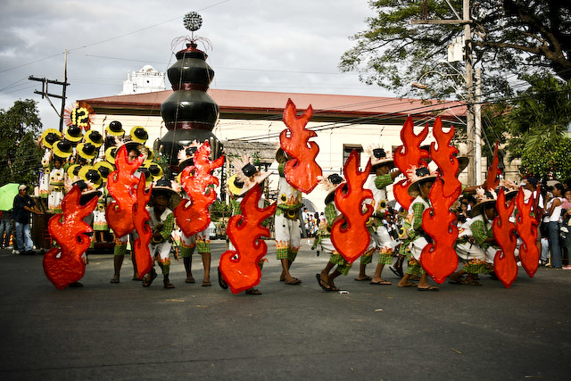
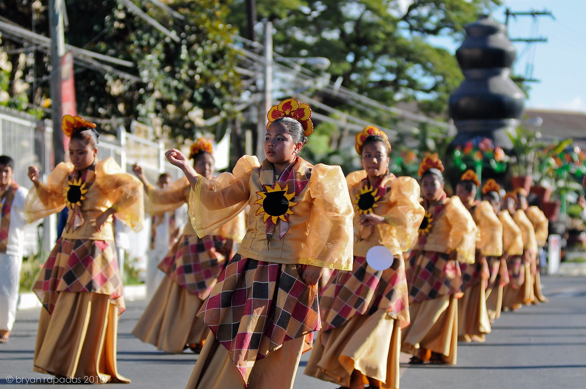

DAMILI FESTIVAL



In San Nicolas, Ilocos Norte December is a month of thanksgiving for all the gift got for the entire year celebrated through merriments. The Damili Festival is a yearly occasion and a month long festivity of moves, parades, shows, excellence event, prevalence challenge, agri-modern exchange reasonable and displays, and sports rivalry. The features of the festival are hung on the last seven day stretch of the month. The headliner of the celebration is the Dance Pageantry, wherein a road move standoff about the conventional control of the town, damili or earthenware ceramics is depicted.